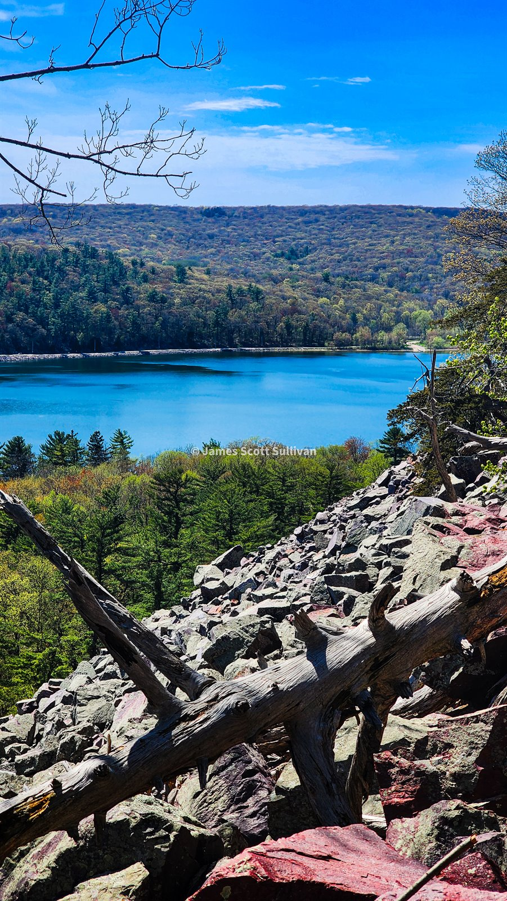
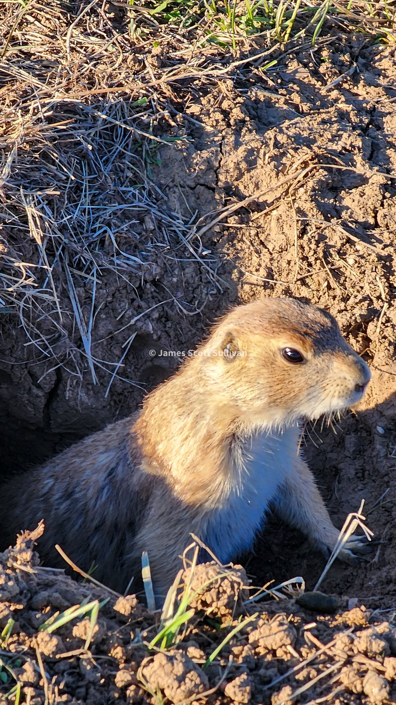
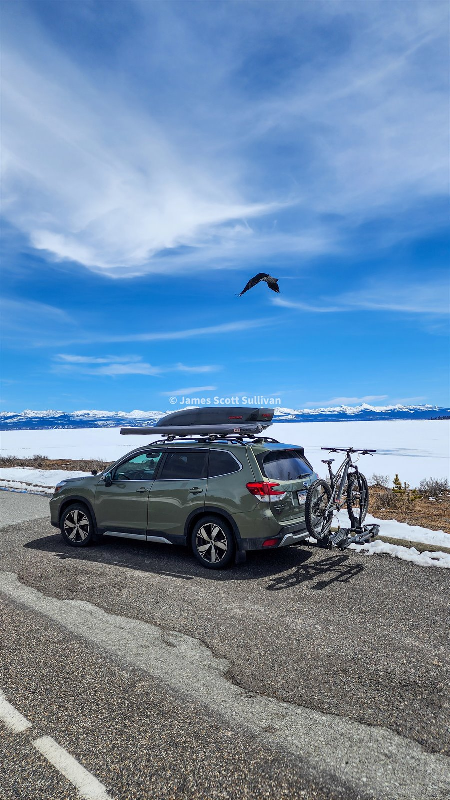

The first week of the trip was basically a sampler platter for the kind of life I had just signed up for. Every day felt like a different version of the country, and every night was some new test of whether I could actually keep doing this without losing my mind, all of my money, or at minimum my ability to smell normal.
I left Sleeping Bear Dunes and kept heading north, then more north, then even more north, because at that point "keep moving" still felt like a complete strategy. I drifted through the little mushroom towns near the Mackinaw Bridge and eventually made it all the way to Pictured Rocks. It was moody, foggy, isolated, and exactly the kind of place that makes you feel like you have finally gotten away from the busy parts of the map. There were barely any people out there. I could feel the trip starting to separate itself from ordinary life.
By the end of that day I was eating Buffalo Wild Wings in Marquette and sleeping in a Walmart parking lot across the street. Honestly? So far so good. That was part of the proving ground too. Big beauty, then fluorescent chaos, then sleep. Repeat.
The next morning I woke up in my beautiful abode, walked into Walmart to use the bathroom and wash up, grabbed snacks, found a cafe, and figured out the next move. That became a rhythm fast. There was a strange freedom in keeping the systems simple. Clean up. Coffee. Stare at map. Go.
My friend had pointed me toward Devil's Lake, so down into Wisconsin I went. The drive was great: rolling green hills, farmland everywhere, and one Amish guy riding a horse-drawn carriage down the road like he had no interest whatsoever in my little mileage experiment. I was not sure what the etiquette was there, so I slowed down, gave him space, and waved like a respectful idiot. When I got to Devil's Lake, I planned to hike up, look around, and head back down. Then I got up on the ridge, had plenty of energy, finally had some sunshine after several gray, rainy days, and thought... why would I stop now?
So naturally I hiked the whole lake. Great choice. Beautiful hike, good conversations, and one of those early moments where I realized the road trip was not just about reaching places. It was also about giving myself permission to keep going when something felt good.

After that I went right back to the mission: get west, get away from the flatlands, get to the first national park. I drove deep into the night until I ran into a wicked storm and had to hunker down at a truck stop. That was another early lesson. Sometimes the move is not epic. Sometimes the move is "do not hydroplane yourself into a ditch because you are feeling inspired."
Then came the Badlands. This was one of the first places on the trip that really scrambled my sense of scale. It felt rugged and ancient and completely unlike the country I had just driven through, but it also felt smaller than I expected. That contrast messed with my head in a good way. I found myself staring at the layers in the rock and thinking about how much time they represented, imagining what the land had looked like in totally different eras and what kinds of animals had moved through the exact same ground. I had a lot of moments like that on the trip, where the place in front of me made time feel weird and deep and personal all at once.
I was also tired, pretty late in the day, and still not very good at the sleeping logistics game. I could not find BLM land, did not really know what I was doing yet, and ended up at a KOA. It was fine. Safe, easy, not especially necessary. A solid early reminder that I still had some creativity to develop when it came to where I parked myself for the night.
The next day was when things started to feel properly wild. Up to that point, I had been moving well and seeing cool stuff, but this was the first day that felt like real adventure. I spent more time in the Badlands first, walking around, enjoying the clay, taking in the weirdness of it all, being a tourist in the best sense of the word. Then a friend recommendation sent me toward Wind Cave National Park.
I had absolutely no interest in going in the cave. The landscape was the thing. I asked a ranger where I should go and got pointed toward a five-mile loop. When I pulled into the trailhead, I was the only car there. Love that. A couple miles in I hit a crossroads: keep it to the original loop or stretch it into something like twelve miles. Naturally, I took the longer option. Such a good choice.
That hike felt like the road trip introducing itself for real. Prairie dogs everywhere. A whole herd of bison. Then a bison bull along the trail just to make sure I understood this was not a petting zoo. It was one of those days where every extra mile kept paying you back. I came out of there feeling cracked open in the best way.

I kept pushing toward Mount Rushmore and stayed at another KOA that night because, again, there was not much public land around and I was still learning the rules of the game. That whole stretch of the trip was me getting smarter by one slightly clunky decision at a time.
By the time I got to the Black Hills, the weather made the choice for me. I had wanted to hike Black Elk Mountain, the high point of South Dakota, but it was snowing and I was not interested in pretending I was immune to bad decisions just because I was on a road trip. I know better than to mess around unprepared in the White Mountains, so I was not going to suddenly get casual about it out there. Could I have done it? Probably. Did it seem worth the risk? Not really.
So I pivoted. I checked out Mount Rushmore, enjoyed the strange roadside patriotism of the whole thing, stopped by Dahl's Chainsaw Art, and kept moving west. Honestly, that ended up fitting the chapter better anyway. This stretch was less about bagging objectives and more about figuring out how to travel well: when to push, when to pivot, when to play tourist, and when to let the road make the call.
The final reward was the drive through the Bighorn National Forest. Over 10,000 feet, then down through the gorges, with the landscape starting to feel more and more like the country I had been chasing since I left home. That drive felt like a threshold. Less Midwest, more West. Less warm-up, more here we go.

By the time I rolled into Cody for the night, I could feel it: the road trip was no longer a loose experiment. It was working. I was learning how to live inside it, and the country was only getting bigger.